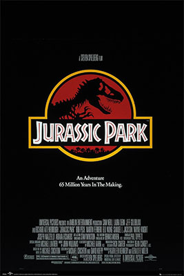
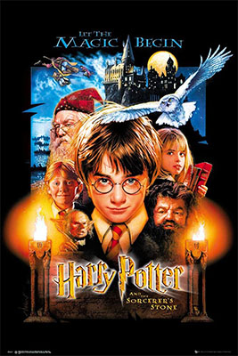

My favorite movies
I love watching all kinds of movies, but I have a preference for fantasy, adventure and animation movies.
This is because I love all the visual effects.
Some of my favorite movies are Jurassic Park, Harry Potter, Transformers and the list goes on..
Jurassic Park

I love this movie because of the dinosaurs. They are wonderful creatures.
In every jurassic movies, you discover new ones and the technology that they use is incredible.
Learn about the movie here.
Order to watch:
- Jurassic Park 1993
- The Lost World: Jurassic Park 1997
- Jurassic Park 3 2001
- Jurassic World 2015
- Jurassic World: Fallen Kingdom 2018
- Jurassic World Dominion 2022
Harry Potter

Who doesn't love magic?
This movie makes every child want to go to Hogwarts School and I am one of them.
I really love the story and all the characters in it.
Learn about the movie here
Order to watch:
- Harry Potter and the Philosopher's Stone 2001
- Harry Potter and the Chamber of Secrets 2002
- Harry Potter and the Prisoner of Azkaban 2004
- Harry Potter and the Goblet of Fire 2005
- Harry Potter and the Order of the Phoenix 2007
- Harry Potter and the Half-Blood Prince 2009
- Harry Potter and the Deathly Hallows: Part 1 2010
- Harry Potter and the Deathly Hallows: Part 2 2011
- Fantastic Beasts and Where to Find Them 2016
- Fantastic Beasts: The Crimes of Grindelwald 2018
- Fantastic Beasts: The Secrets of Dumbledore 2022
Transformers

I've watched every Transformers over ten times and I've never gotten tired of it.
I just love all the robots. Optimus Prime and Bumblebee are my favorites.
How they transform from cars to robots is simply unbelievable!
Learn about the movie here
Order to watch:
- Transformers 2007
- Transformers: Revenge of the Fallen 2009
- Transformers: Dark of the Moon 2011
- Transformers: Age of Extinction 2014
- Transformers: The Last Knight 2017
- Bumblebee 2018